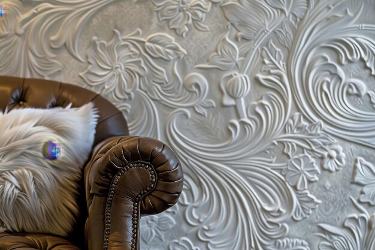
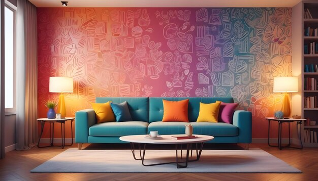
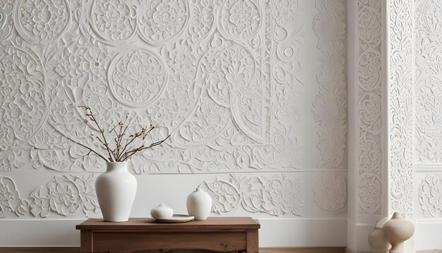
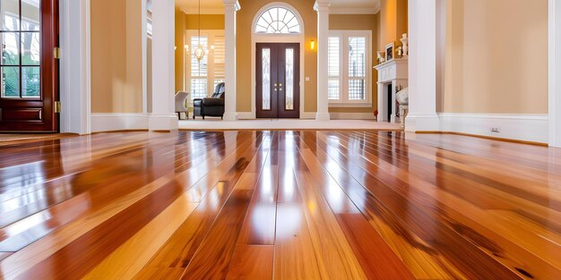
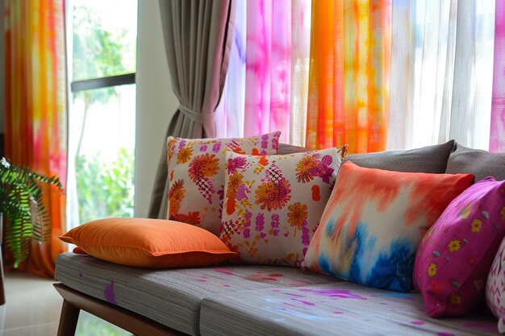
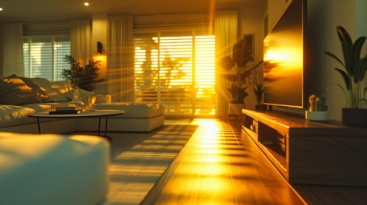

.jpg)
Play with Textures to Add Depth and Interest
A well-designed room isn’t just about color—it’s also about texture. Mixing different textures can make a space feel more dynamic and layered. For example, combine a plush velvet sofa with a sleek metal coffee table and a shaggy wool rug. Or, pair soft linen curtains with a rough-hewn wooden bench. This contrast in textures adds visual interest and prevents the room from feeling flat. Additionally, textured accessories like cushions, throws, and rugs can easily be swapped out to update the room’s look and feel.
- Layering Textures

- Mix and Match: Combine different textures to create visual interest. For instance, pair a sleek leather sofa with a plush wool rug, or a smooth glass table with a rough, wooden accent piece.
- Layered Textiles: Use various fabrics like velvet cushions on a linen sofa or silk curtains over a cotton bedspread to create a rich, layered effect.
- Texture and Color

- Contrast: High-contrast textures can highlight architectural features and design elements. For example, a matte wall finish can make a shiny metal light fixture stand out.
- Monochromatic Scheme: Different textures in a single color scheme can add depth without overwhelming the space. A room with white walls, a white wool rug, and white linen curtains will feel sophisticated and serene.
- Texture in Wall Treatments

- Paint Finishes: Use matte, satin, or glossy paints to alter the visual texture of walls. Matte finishes absorb light, while gloss reflects it, adding different layers of texture.
- Wallpapers and Panels:Textured wallpapers, like grasscloth or embossed patterns, and 3D wall panels can add dimension to flat surfaces.
- Furniture and Decor
.jpg)
- Furniture Choices: Opt for pieces that offer varied textures, such as a velvet armchair, a reclaimed wood coffee table, or a metal side table.
- Decor Items: Incorporate textured decor items like woven baskets, ceramic vases, or glass sculptures to add visual interest and tactile quality.
- Flooring

- Area Rugs: Use rugs with different textures (e.g., shag, jute, or woven) to define areas within a room and add comfort underfoot.
- Mixed Materials:Combine hardwood with tile or stone to create a dynamic flooring arrangement.
- Textured Accents

- Throw Pillows and Blankets: These are easy ways to introduce texture. Choose pillows in various materials like faux fur, knits, or metallic fabrics.
- Curtains and Upholstery: Textured curtains and upholstered furniture can contribute significantly to the overall tactile experience of a room.
- Lighting and Reflection

- Reflective Surfaces: Incorporate materials like glass, metal, or polished stone to reflect light and create a sense of depth.
- Lighting Fixtures: Different textures in lighting fixtures, such as a crystal chandelier or a matte metal pendant, can impact the mood and texture of the room.
- Architectural Elements
.jpg)
- Trim and Moldings: Textured moldings or wainscoting can add architectural interest and break up large wall surfaces.
- Fireplaces and Feature Walls: Textured stone or brick fireplaces can become focal points in a room, adding both depth and character.
- Tips for Success
- Balance: Ensure a balance of textures to avoid overwhelming the space. Too many competing textures can create visual chaos.
- Scale and Proportion: Consider the scale of textures in relation to the size of the room. Larger rooms can handle more varied textures, while smaller spaces may benefit from a more restrained approach.
- Consistency:Maintain a cohesive design by harmonizing textures with the overall color scheme and style of the room.